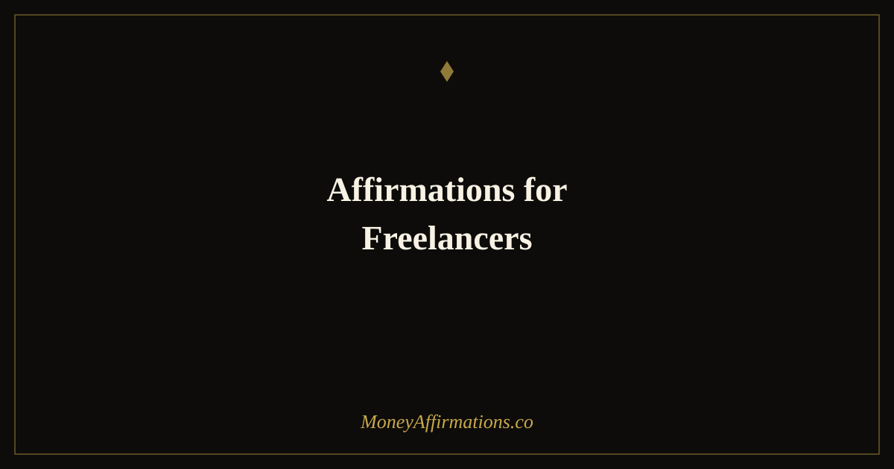

50 Affirmations for Freelancers to Charge Your Worth and Attract Great Clients

Freelancing gives you freedom, but it hands you something harder to manage than a deadline: the constant inner negotiation over what you are worth. When your income fluctuates and clients ghost your proposals, it is easy to shrink — to lower your rates "just this once," to take on projects that drain you, to apologise for your prices before a client even flinches. These patterns do not come from a lack of skill. They come from a money mindset that has not caught up with your actual expertise.
Affirmations for freelancers are a practical tool to interrupt that cycle. Used consistently, they rewire the mental default from scarcity and self-doubt toward the kind of quiet confidence that attracts better clients, commands higher rates, and makes saying no to bad-fit work feel natural rather than terrifying. The 50 affirmations below are designed to work on every layer of that process — from releasing imposter syndrome to reinforcing your value to anchoring an identity as a thriving, in-demand professional.
What are affirmations for freelancers?
Freelancer affirmations are short, present-tense statements that target the specific money blocks and confidence gaps that independent workers face. They are different from generic motivational phrases because they speak directly to the freelance experience: rate anxiety, imposter syndrome when pitching to larger companies, fear of dry spells, and the guilt that can come with charging what the market will actually bear.
Repeating these statements — especially in moments of doubt before sending a proposal or getting on a discovery call — gradually shifts your nervous system's response from threat to opportunity. The goal is not blind optimism; it is a grounded belief that your skills create real value and that you deserve to be paid accordingly. Over time, that belief changes your behaviour, and changed behaviour changes your results: higher rates accepted, better clients attracted, boundaries held with ease.
50 affirmations for freelancers
- I charge rates that reflect the full depth of my skill, experience, and the results I deliver.
- My ideal clients find me easily, and they are excited to invest in my work.
- I am confident pitching my services because I know exactly what I bring to the table.
- Every proposal I send is an invitation for the right client — not a plea for approval.
- I release clients who undervalue my work and make room for those who truly appreciate me.
- My portfolio is proof of my expertise, and it speaks powerfully on my behalf.
- I raise my rates because my growing experience earns a growing return.
- I say no to low-budget projects that would take time from higher-value opportunities.
- Clients who pay premium rates respect my time and deliver better projects to collaborate on.
- I handle contract negotiations calmly and from a place of self-assurance.
- Dry spells are temporary; my skills and reputation compound over time.
- I am the expert in the room, and I communicate that with ease and clarity.
- My income grows steadily because I consistently show up and do great work.
- I attract clients who value quality, meet deadlines, and pay on time.
- Setting boundaries around my time and scope protects my creativity and my income.
- I trust my instincts when a client or project is not the right fit.
- My niche expertise is rare and valuable — I do not need to compete on price.
- Asking for a referral feels natural because I genuinely deliver results worth sharing.
- I manage my freelance finances with confidence, setting aside taxes and savings with ease.
- Every year I freelance, I become more skilled, more selective, and more prosperous.
- I am building a freelance business that supports my lifestyle and grows every year.
- I show up to every client interaction as the confident, capable professional I am.
- My value to clients is clear, demonstrable, and worth every penny I charge.
- I release all imposter syndrome and stand fully in my expertise.
- New opportunities come to me consistently because I do excellent work and treat people well.
- I am comfortable discussing money with clients because I know my work creates real results.
- I deserve consistent, reliable income and I take the steps each day to create it.
- My reputation grows with every project I complete and every client I serve with excellence.
- I approach each new project with energy, focus, and the knowledge that I will deliver great work.
- My freelance income is stable, growing, and more than enough to support the life I want.
- I am worthy of long-term retainer clients who value my work and pay me on time, every time.
- I invest in my skills because every improvement compounds into higher rates and better clients.
- I send proposals with confidence, knowing that the right client will say yes.
- I have built something real and valuable with my freelance business and I am proud of it.
- My calendar fills with work I love because I have positioned myself clearly in my market.
- I release the fear of being "too expensive" because the right clients expect to pay for quality.
- I set my own hours, choose my own clients, and earn on my own terms.
- My creativity and skill are assets that appreciate in value over time.
- I follow up with prospects calmly and confidently because I believe in what I offer.
- I am a business owner as well as a creative professional, and I run my finances accordingly.
- Every client I serve becomes part of a network that sends more great work my way.
- I communicate my rates clearly and without apology because they are entirely justified.
- I am growing into the freelancer I have always wanted to be, one project at a time.
- Financial stability as a freelancer is achievable and I am actively building it right now.
- I handle difficult client conversations with grace, clarity, and full respect for my own time.
- My best work is ahead of me and the income that comes with it grows accordingly.
- I am seen as an authority in my field and clients seek me out for that expertise.
- I protect my creative energy by choosing work that aligns with my values and my strengths.
- I am grateful for every client and every project that has shaped my freelance journey.
- I am a thriving, in-demand freelancer and my business reflects the excellence I bring every day.
How to use these affirmations
The most effective approach for freelancers is to build affirmation practice into the work moments where doubt hits hardest. Before you open a new proposal, read through three to five of the affirmations above and say them aloud or write them by hand. The physical act of speaking or writing forces your brain to process the statement more deeply than skimming does.
If you have a discovery call or a rate negotiation coming up, choose a single affirmation and repeat it ten times the night before and ten times the morning of. Tie it to something visceral — feel what it would actually feel like to speak your rate without apology. Over time, that feeling becomes the baseline rather than the exception.
Many freelancers also find it useful to build a short pre-pitch ritual — two minutes of affirmation work followed by a slow breath — that signals to the brain that this is a confident performance mode, not a survival situation. Pair this practice with the affirmations for sales confidence if you want to go deeper on the pitching and conversion side of your freelance business.
Why affirmations work for freelancers: the psychology
The confidence problems that freelancers face — undercharging, over-explaining rates, accepting scope creep, struggling to say no — are not skill problems. They are identity problems. The brain defaults to behaviour that matches the story it holds about who you are. If your dominant self-narrative is "I am lucky anyone hires me," your behaviour will reflect that story: you will discount, over-deliver without compensation, and attract clients who sense the insecurity and push accordingly.
Affirmations interrupt this by creating a competing narrative at the neurological level. Research on self-affirmation theory — developed by psychologist Claude Steele at Stanford — shows that affirming core values and competencies reduces the threat response that financial conversations typically trigger. When a client questions your rate, a brain in threat mode scrambles for safety; a brain anchored in a confident identity holds its position. This is not a metaphor — it reflects measurable differences in prefrontal cortex activity between affirmed and non-affirmed states.
The reticular activating system (RAS) also plays a key role. Once you consistently tell your brain that you are a high-value, in-demand professional, it filters your environment to find evidence of that truth — surfacing referral opportunities, ideal client enquiries, and moments to raise your rates that a scarcity-primed brain would miss entirely. The result is a compounding cycle: better self-belief leads to better behaviour, which produces better outcomes, which reinforces the belief.
Tips to make them work faster
- Keep a win log. Record every compliment, positive testimonial, and successful project. Read it before any affirmation session to give your brain real evidence that the statements are grounded in truth.
- Anchor to a rate number. When affirming around charging your worth, say your actual target rate out loud. Vague affirmations produce vague results — specificity creates conviction.
- Pair with market research. Knowing what comparable freelancers charge removes the illusion that your rate is too high. Affirmations land harder when you have data backing them up.
- Revisit after rejection. When a proposal gets declined, return to the affirmations within 24 hours to recalibrate before sending the next one.
- Say them before you set boundaries, not after. Use affirmations proactively — before a scope-creep conversation or a rate increase email — rather than as damage control.
Frequently asked questions
Can affirmations actually help me raise my freelance rates?
Affirmations work on the psychological friction that stops you from raising rates you have already intellectually justified. If you know your rate should be higher but feel physical dread when you type the number into a proposal, that dread is a mindset problem, not a market problem. Consistent affirmation practice reduces that anxiety, making it measurably easier to name higher figures with confidence and conviction.
How long before I start seeing results from freelancer affirmations?
Most freelancers notice a shift in how they feel during sales conversations within two to three weeks of daily practice. Tangible results — better clients, accepted higher-rate proposals — typically follow within one to three months, because you are changing behaviour (what you charge, how you pitch, which projects you accept) and behaviour change takes time to compound into outcomes.
What if I do not believe the affirmations yet?
That is exactly when you need them most. Start with affirmations that feel like a stretch of about 20 percent beyond your current belief — not a lie, but an edge. "I am becoming someone who charges confidently" is more believable than "I am already the highest-paid in my field." As smaller beliefs solidify, scale up. Progress compounds in layers.
These affirmations are designed to work alongside the broader practice of shifting your financial identity. For a deeper foundation, explore the full money affirmations collection — it covers the core beliefs around earning, receiving, and building lasting wealth that support everything you do as a freelancer.